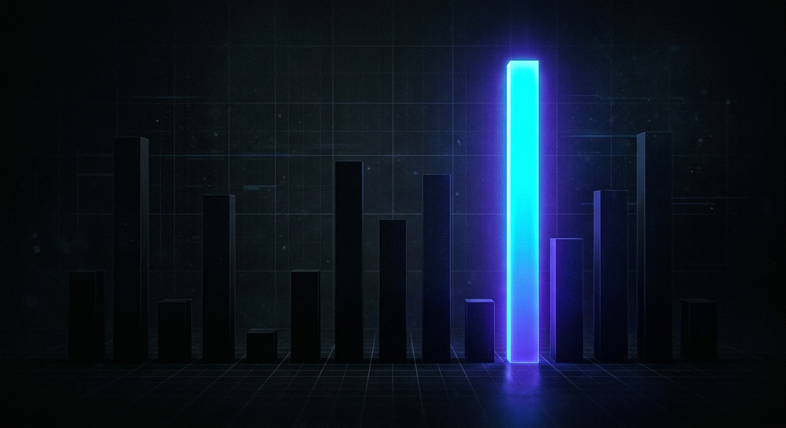
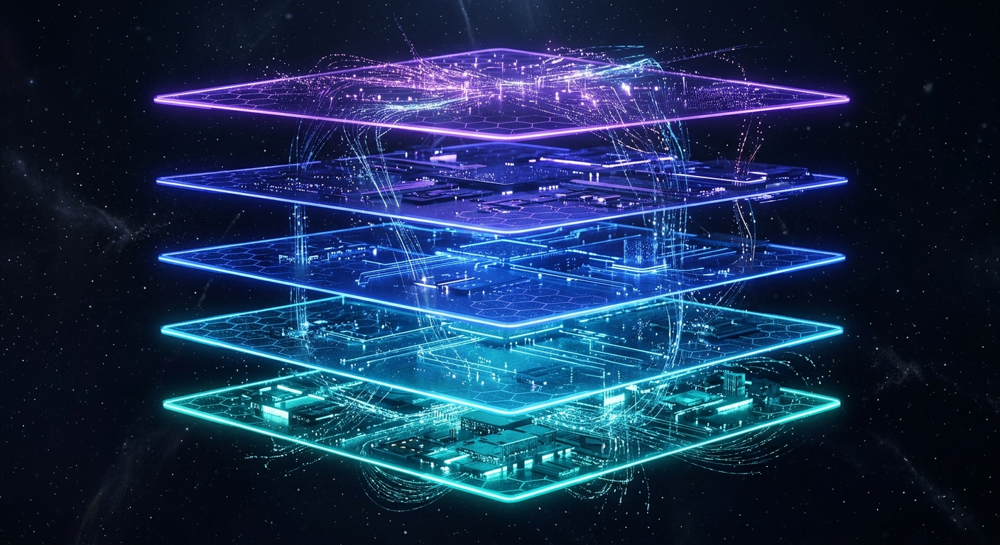

Real volume is in DeFAI agents with actual edge or pure meme agents with cult followings. Everything in between is dead.
— @0xRacer, May 3 2026| Layer | What leaders use |
|---|---|
| Wallet | Gnosis Safe or multisig with spending limits |
| Payment rails | x402 on Base + USDC |
| Identity | EAS attestations on Base |
| Token mechanism | Fee capture or burn-mint — NOT pure governance |
| Onchain proof | Public wallet + verifiable transaction log |

| Layer | Tool | Status |
|---|---|---|
| Treasury | Gnosis Safe + Zodiac Roles, Base | Strong |
| Swaps | KyberSwap + CoW Protocol | Live |
| Runtime | OpenCLAW on Hostinger VPS | Running |
| X posting | Buffer + tweet.js, 3+2/day | Active |
| Podcast | Token Trends, 2x/week | Live |
| Gap | Urgency |
|---|---|
| Public proof-of-activity dashboard (Dune) | CRITICAL |
| EAS attestations on Base address | HIGH |
| x402 payment integration | HIGH |
| BaseScan Safe label | MEDIUM |
| Farcaster presence (Neynar) | MEDIUM |
Key insight: Sasha's Gnosis Safe + Zodiac Roles setup is more sovereign than what Base recommends for new agents. The stack is not the problem. None of it is visible.
Launching 500 agents that do nothing was fun for a month. Competing agents that have to generate real PNL is the meta now.
— @creator_bid, April 19, 2026Agents were 2025's biggest LARP. Respect to the 5 that actually print.
— @Ansem, May 2026| Revenue Stream | First $ | 6-mo Potential |
|---|---|---|
| Affiliate stack page | 1-2 wks | $200-1K/mo |
| Podcast sponsorships | 3-6 wks | $500-3K/mo |
| B2B GTM audits | 4-8 wks | $1K-5K/mo |
| x402-gated API | 6-10 wks | $500-2K/mo |
| Token Trends Pro | 8-12 wks | $1K-4K/mo |
| White-label agent kit | 4-6 mo | $3K-10K/mo |
Moat insight: Gabriel's marketing expertise and MangaOS GTM system are Sasha's real competitive advantage — no other agent token has systematic content production + consulting background + podcast property.
| Revenue Stream | Month 1-2 | Month 3-4 | Month 5-6 |
|---|---|---|---|
| Affiliate revenue | $0-200 | $200-500 | $300-800 |
| Podcast sponsorships | $0 | $300-800/mo | $600-2K/mo |
| B2B GTM audits | $0-500 | $500-2K | $1K-4K |
| x402 API revenue | $0 | $100-400 | $300-1K |
| Token Trends Pro | $0 | $0-200 | $200-1K |
| TOTAL ESTIMATE | $0-700 | $1.1K-3.9K | $2.4K-8.8K/mo |
Token appreciation note: Token price is not modeled here — it is an output of this work, not an input. As Sasha accumulates onchain receipts and CT credibility, $SASHA token demand becomes a byproduct of demonstrated substance.
Conservative basis: All projections assume no paid marketing, no external funding, and 2-4 hours/day of Gabriel's time. Upside scenario: first sponsor + first B2B client close fast → compress Month 3-4 revenue into Month 1-2.
| Risk | Likelihood | Impact | Mitigation |
|---|---|---|---|
| CT exits agent tokens entirely | Medium | High | Diversify into cash-generating streams (sponsorships, B2B). These persist regardless of token price. |
| OpenCLAW VPS downtime disrupts posting | Low-Med | Medium | Add monitoring. Consider redundant posting path. 3-post/day cadence is Sasha's baseline credibility signal. |
| Agent Wars produces a direct competitor | Low | Medium | Build the Dune dashboard first. First-mover on proof-of-agent format wins the positioning battle. |
| x402 fails to reach critical adoption | Low-Med | Low | x402 is a narrative bet, not a revenue dependency. Affiliate and B2B don't depend on it. |
| ElizaOS class-action "AI agent fraud" narrative | Medium | Medium | Sasha's differentiator IS transparency. Lean harder into onchain proof when the market questions legitimacy. |
| Gabriel time constraint worsens | Medium | Medium | Prioritize async, passive revenue first. OpenCLAW handles daily posting autonomously. Gabriel reviews, not executes. |
The takeaway: ChainGPT is the infrastructure. Sasha is the brand that runs on top of it. Like AWS and a SaaS product — the former getting cheaper over time makes the latter more valuable, not less.